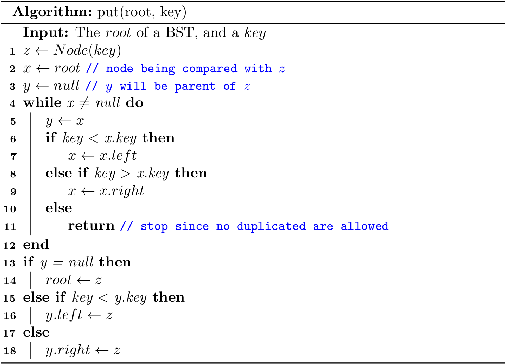
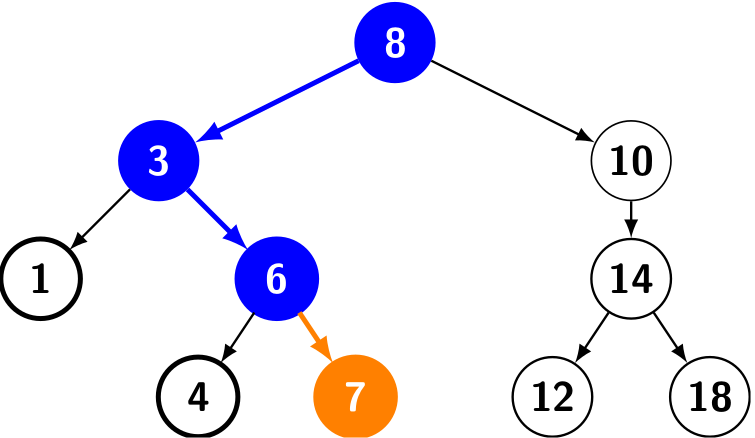

Binary Search Trees (1)
A tree without any restriction is unpractical in general, and in this section, we introduce a simple restriction that each node has exactly two links, which are called its left and right links, that point to nodes called its left child and right child, respectively.

Such data structure is known as binary tree, and we can define it as either a null link or a node with a left link and a right link, each references to (disjoint) subtrees that are themselves binary trees.
In a binary search tree, each node also has a key (and a value)1, with an ordering restriction to support efficient search.
A binary search tree (BST) is a binary tree where each node has a (comparable) key and satisfies the restriction that the key in any node is larger than the keys in all nodes in that node’s left subtree and smaller than the keys in all nodes in that node’s right subtree.

For example, given a binary search tree with integer keys, how to search 6? Let's start from its root (8):
- Since 6 < 8, go to its left child.
- Since 6 < 3, go to its right child.
- Since 6 == 6, bingo!
Only three comparisons are required while searching, and this idea is also found at the binary search of a sorted list (recall BinarySearch.java or binary_search.py).
Let's recap the binary-search-tree property again: Let x be a node in a binary search tree.
- If y is a node in the left subtree of x, then \(y.key < x.key \).
- If y is a node in the right subtree of x, then \(y.key > x.key \).
As we can see, we can use a BST to represent a dynamic set if only keys are considered. If values are also involved, it is in fact a map. Throughout this book, we mainly focus on dynamic sets.
BST structure
Now let's talk about how to design a BST. Like a linked list, a BST can be represented by its root node due to the fact that it is recursive, where a node2 consists of
- a link to its left subtree
- a link to its right subtree
- the key
- (the value)
And it can be roughly described using the following Python code:
class Node:
def __init__(self, key, left=None, right=None):
self.key = key
self.left = left
self.right = right
class BST:
def __init__(self):
self.root = None
A few notes on comparable
In a BST, the keys should be comparable. The basic data types, such as int, double, and String are comparable. Then what about a Dog class? Can we say a dog is larger or smaller than another dog? Such comparison makes sense if and only if a Dog is comparable.
In Java, it is enforced by the Comparable interface, and it can also be combined with generics. In addition, we can use its compareTo() method, instead of the comparison operators (e.g., >, <, ==) in the code.
class Node<Key extends Comparable<Key>> {
...
}
As for Python, in order to use the comparison operator (e.g., >, <, ==) directly, one shall provide the rich comparison methods for ordering in the user-defined class3. Luckily, it is the responsibility for people who use a BST, not for us who create a BST.
BST implementation
The complete code (using recursions) can be found at BST.java and bst.py. In addition, an iterative implementation can be found at BST2.java.
size()
We can also maintain the size member variable in a BST like we did in linked lists. Here we adopt another solution: Node holds an instance variable n which givens the node count in the subtree rooted at the node.
class Node:
def __init__(self, key, n=1, left=None, right=None):
self.key = key
self.n = n
self.left = left
self.right = right
And our implementations will benefit a lot from such recursive design. However, as for traditional iterative implementations, we assume that Node does not hold n; Instead, the BST ADT maintains size.

Then the size of a BST is size(root); it runs with a constant time complexity. By the way, given the implementation of size(), we can also offer isEmpty() to check whether a BST is empty:
public boolean isEmpty() {
return size() == 0;
}
put()
This method is often called insert() in some implementations, and it is used to add a new key to a BST.
Iterative put()
A new key will always be put as a leaf. Like the algorithms in linked list, we shall maintain a pointer as the parent while descending the tree.
The following figure shows inserting a node with key 7 into a binary search tree. The simple path from the root down to the position where the node is inserted is shown in blue. The new node and the link to its parent are highlighted in orange.
As we can see, to insert a new key, we shall descend from the root to a leaf. Suppose h is the height of the tree, the time complexity of put() is \(O(h)\).
Recursive put()
To make use of recursions, we first design an algorithm to insert a key to the tree rooted at x. Since updating could modify the tree, we shall return the new root as the result.

Then to put a key onto a BST can be written as
root = put(root, key);
It is worthwhile to take the time to understand the dynamics of this recursive implementation. Again, the iterative version is more efficient while the recursive one is easier to write.
get()
This method is often called search() in some implementations, and it is used to get the node containing the given key; null will be returned if the key is not found.
Iterative get()
It is, in fact, a binary search tree for a BST. It begins its search at the root and traces a simple path downward in the tree.
Like put(), the running time of get() is also \(O(h)\).
Recursive get()
We can also implement it with a plain tail-recursion.

Then to get a node from a BST given a key, we can use
return get(root, key);
removeMin()
This method (also known as deleteMin()) is to remove the node with the smallest key. Note that it is always located at the leftmost in a BST.
Iterative removeMin()
We will descend the node from root to the leftmost leaf. Like put(), a parent pointer is also maintained.
The time complexity is also \(O(h)\).
Recursive removeMin()
It takes a node x as a root and then returns a new node as the root after removing the node with the smallest key.
- Base case: When its left child is
null, remove itself, and return its right child. - Recursion: Update
x.lefttoremoveMin(x.left).

Then removing the node with the smallest key in a BST can be written as
public void removeMin() {
if (isEmpty()) throw new NoSuchElementException();
root = removeMin(root);
}
By the way, it is also easy to implement the algorithm min() to get the smallest key from a BST:
public Key min() {
if (isEmpty()) throw new NoSuchElementException();
return min(root).key;
}
private Node<Key> min(Node<Key> x) {
if (x.left == null) return x;
else return min(x.left);
}
removeMax()
This method (also known as deleteMax()) is to remove the node with the largest key. Note that it is always located at the rightmost in a BST. The main idea is the same with removeMin(), so the implementation is left as an exercise for readers. In addition, readers can also design the algorithm max() to get the largest key in a BST.
remove()
This method is often called delete(), which is used to delete a node given a key. In fact, this is the most complicated algorithm for a BST.
Iterative remove()
The iterative implementation is a bit tricky, and it is omitted in this book. Curious readers can refer to Introduction to Algorithms.
Recursive remove()
Like other recursive algorithms in a BST, remove(x, key) takes a node x and removes the node with key in the tree rooted at x, and returns a new root.
Like what we did in get(), we shall descend the current node if x.key does not equal `key. And the real tricky part is how to handle the case when they are identical.
-
If
xdoes not have any child, then returnnull. -
If
xhas just one child, then return that child. -
Otherwise,
xcan be replaced with the leftmost (i.e, min) nodeyin the tree rooted atx.right. Essentially,yis the successor ofx. In addition, the right child of updatedxbecomesdeleteMin(right, key), and the left child remains unchanged.10 11 / \ delete(10) / \ 7 15 ---------> 7 15 / \ / \ / \ \ 5 8 11 18 5 8 18

The time complexity is also \(O(h)\).
Then removing node by a given key in a BST is
root = remove(root, key);
A few notes on Python's implementation4
Since Python supports nested methods, we can define some private methods as nested. For example, the recursive implementation of get(x, key) will only be called by get(key), and it can be designed as a nested one:
def get(self, key):
def _get(x: BST.Node):
if x is None or key == x.key:
return x
if key < x.key:
return _get(x.left)
elif key > x.key:
return _get(x.right)
if key is None:
raise KeyError
return _get(self._root)
Note that the inner method can access the parameter of its outer method, so the repeated key can be omitted.
On the other hand, some helper methods will be called by several other methods. In that case, it can be designed as a static one:
@staticmethod
def _size(x: Node):
if x is None:
return 0
else:
return x.n
1 For simplicity, the associated value (also known as satellite data) is not discussed in this chapter.
2 Some implementations would also maintain an extra link to its parent.
3 See more at https://stackoverflow.com/questions/8276983/.
4 The inner and static implementations are not compulsory, and it is fine to always use the regular instance methods.